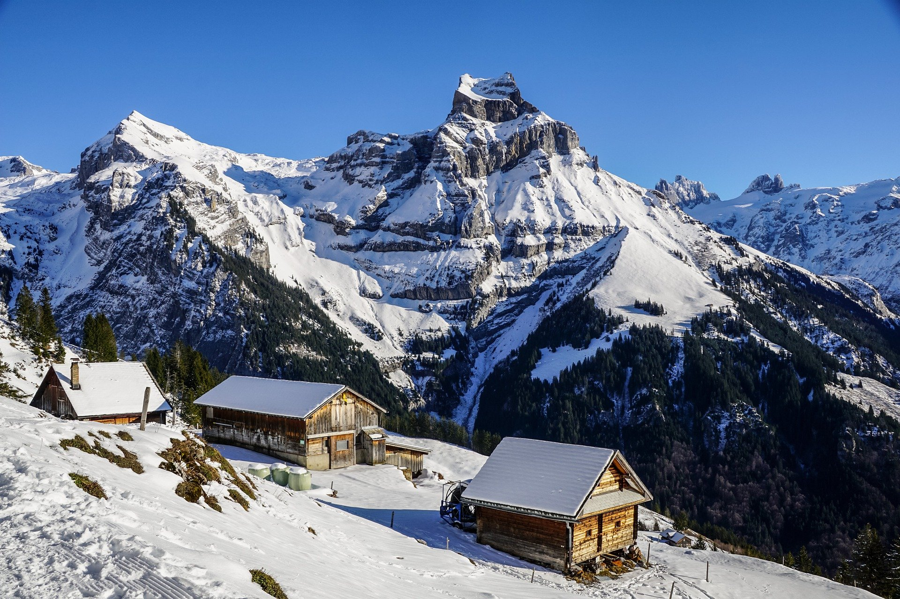

<ion-header>
  <ion-toolbar>
    <ion-title>post</ion-title>
  </ion-toolbar>
</ion-header>

<ion-content class="ion-padding">
  <ion-icon class="arrow_icon" [routerLink]="['/profil']" name="arrow-back-outline"></ion-icon>

  <ion-card>
    <ion-card-subtitle class="title_card">
      <ion-avatar class="avatar">
        
      </ion-avatar>
      <h5>Username</h5>
    </ion-card-subtitle>

    <ion-card-content>
      Keep close to Nature's heart... and break clear away, once in awhile,
      and climb a mountain or spend a week in the woods. Wash your spirit clean.
    </ion-card-content>

    <div class="img_post">
      
    </div>

    <div class="like_com">
      <div class="align">
        <ion-icon name="heart-outline"></ion-icon>
        153
      </div>

      <div class="align">
        <ion-icon name="chatbubble-outline"></ion-icon>
        200
      </div>
    </div>

    <ion-item>
      <ion-label position="floating">Laisser un commentaire</ion-label>
      <ion-input></ion-input>
    </ion-item>
</ion-card>
</ion-content>
